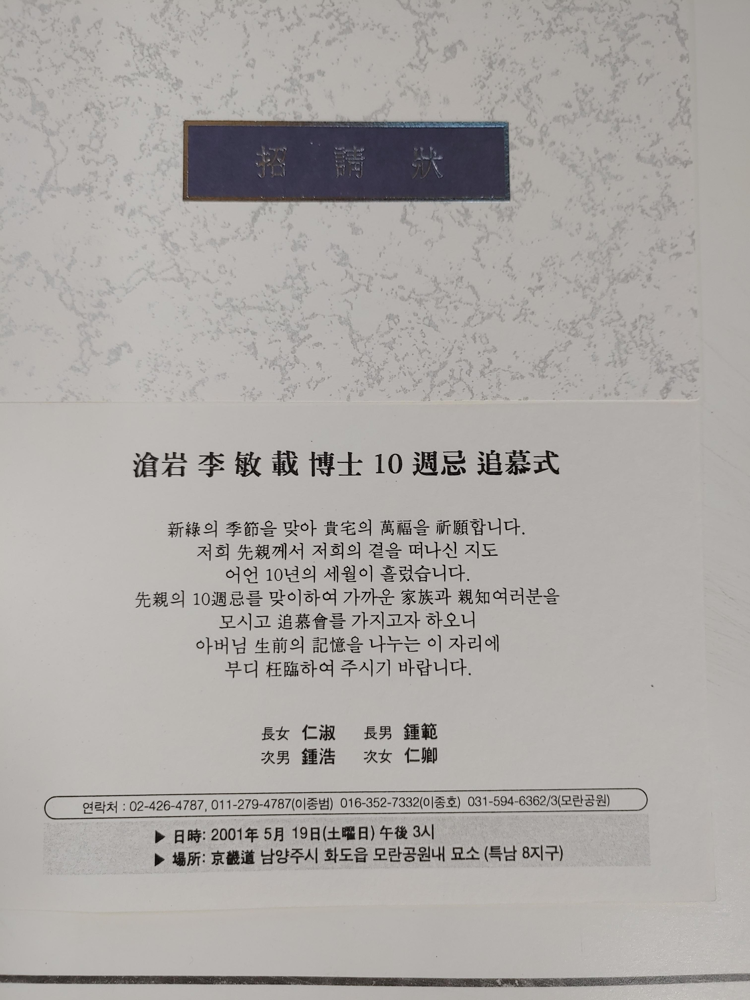
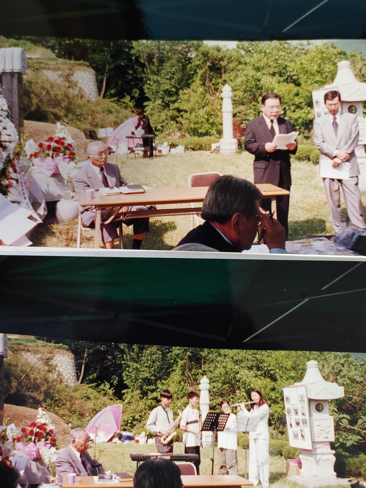
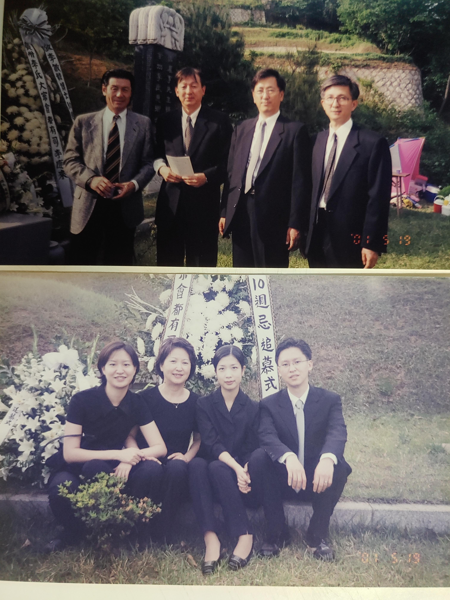
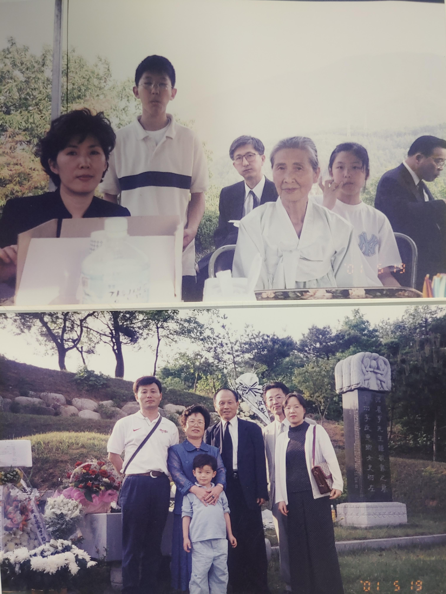
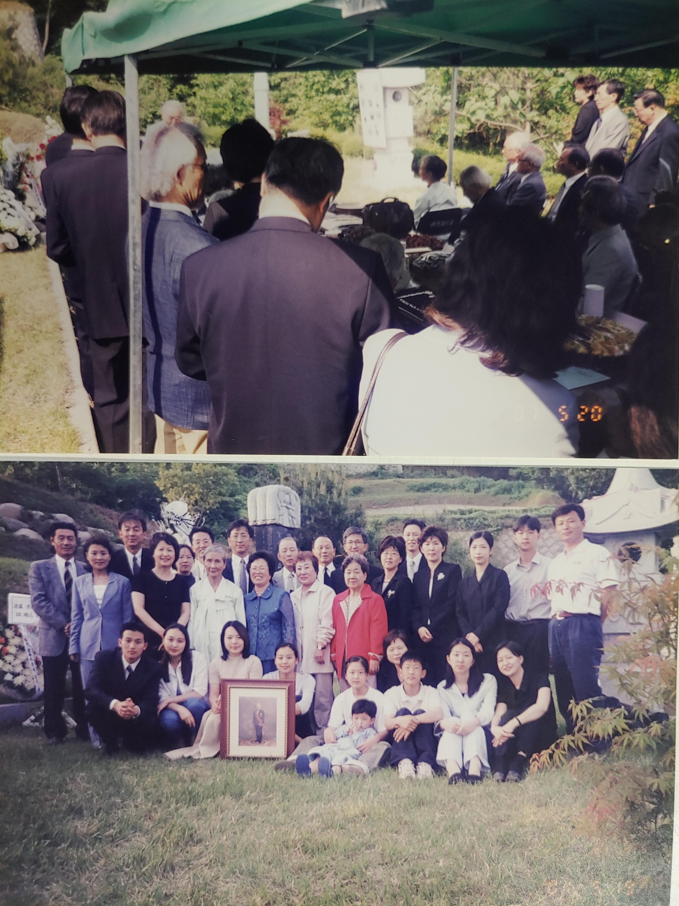

일가친척들이 많이 모였다. 왼쪽끝에 정휘찬은 정규자의 동생이고 정재호(복싱선수출신 부동산사업가-부산)의 처남이다. (같은정씨?) 확실친 않지만 그일가는 인천에 살았고 경순(은희모, 맏아매 손녀)과 친척관계인듯. 정휘찬은 어떤연유에서인지 한때 청량리에서 기거하였다. 기억의 조각을 맞춰보면 장교복장을 하고 있던 잘생기고 시원시원한 청년이었던 듯. 가운데 경순(박영식의 처)의 양옆에는 분옥누님(조태규, 용철, 용석)과 선희고모가 보인다. 모두 청량리 우리집에 기거하던 식구들. 청량리시절에는 종종 식구를 카운트 해보곤 하였는데 일시 최대 16명 기록이었던가. 아버지께서는 쌀걱정으로 표현하시곤 했다. 위 사진에 올라있는분들외에도 경기고출신 용만크라버니, 결혼전 함태암, 그리고 심상철, 김종진선생도 잠시 겹쳐있었고 (그들을 이어 강병원-수학, 전인형-외교 등.). 일하는 혜순이 은순이도 있었고 정자누나.... 50년대 청량리관사는 거진 피난시절의 연장에 가까웠던듯 하다. 이렇게 대가족의 중심에 아버지가 계셨다.
동물학과 교수로서 아버지를 스승으로 각별히 모셨던 조완규총장(교육부장관). 이분은 아버지 장례(서울대병원-5일장)시 총장신분으로 매일같이 조문하셨다. 나어릴때 친근한 인상의 엄규백(양정고 교장, 조선조 엄비가문)박사. 돌이켜보면 아버지 주변에는 많은 사람들이 모여들었다. 수많은 제자나 일가친척은 물론 동료선후배 교수, 테니스친구들, 동향인, 일본의 동창들 까지.. 젊은시절엔 서울대 약대, 의예과, 이화여대 출강하시면서 수많은 admirer 를 양산하셨다. 수십년이 지난 내 귀에도 종종 occasionally 일화가 들려온다. 인간적 매력에서오는것이라 해석할 수 밖에 없는 이유는 아버지 자신은 특별히 이런상황을 의도나 기대하지 않으시기 때문이고 때론 아버지자신도 의아해 하시기도 하였으니... (나와는 달리 행동적 호인형-주위에 호의를 베푸는 천성이기는 하다)